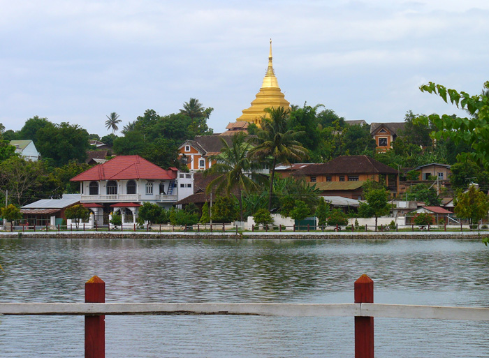
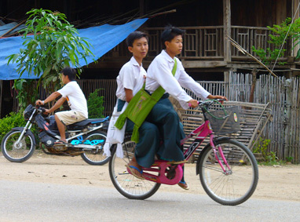
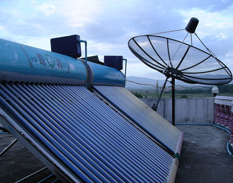
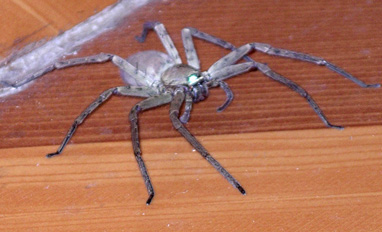
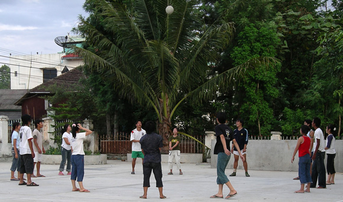
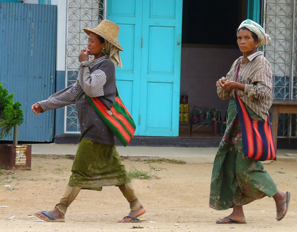
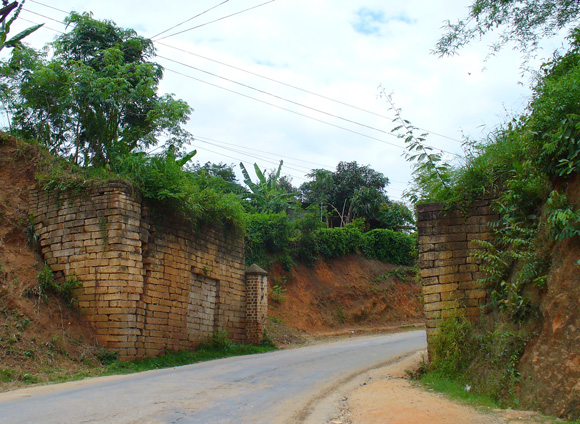
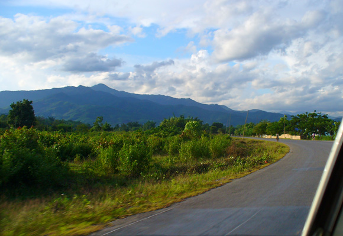
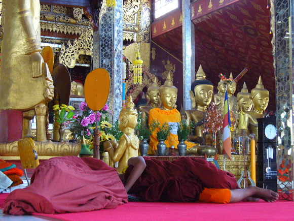

Myanmar Trav-E-Logs ©
Keng Tung
|  | |
| back: Bangkok Start | Wat Zom Khum Pagoda dominates the Skyline. |
================================= Left Bangkok by overnight bus to Chiang Mai, eventually connecting with another bus bound for Chiang Rai. Immediately hopped a third bus for Mae Sai, on the Thailand Border with Tachileik, Myanmar. After depositing passport and payment at the border in exchange for a 2-week travel document, officials informed me 'no more buses today -- must hire taxi' for travel to Keng Tung. Generally, a passenger in a hurry can buy all empty seats to get the taxi rolling, but this backpacker has more time than money. Two hours later we had our quota of five passengers and were on our way, arriving at Harry's Guest House in Keng Tung about 7 PM. =================================
June 7-9, 2006
|
Keng Tung (Kyaing Tong) is a formerly walled town in the Eastern Shan State of Myanmar, 80 to 175 kilometers from the borders of China, Laos, and Thailand. The golden triangle drug trade of yesteryear has been mostly replaced with rice and vegetable farming, but the many hill tribes in the region are still struggling to find a replacement livelihood. Harry's Guest House is one of about four places a foreigner is permitted to stay in Keng Tung, but the only place (and the cleanest) that really has it all together. Guides, bike, motorbike, and car rentals are all available, with maps, tourist information, and breakfast included in the price of accommodation. A simple restaurant next door serves food until 9 or so each evening. "Permitted" you ask? That's another of the rules for travelers in Myanmar -- only licensed establishments can offer overnight lodging to foreigners. Photos, clockwise from the top: Kickball socializing in a church courtyard; Field workers heading home; Remnant of walled-town gate; Shan State countryside from taxi window; Novice napping in the temple; Asked the manager to remove this visitor from my guesthouse room when checking in; Solar water heater and satellite dish on roof; Schoolboys in uniform on bicycle.   Enjoy! Bill ------------------------------ Questions? Email me at the juno.com address dancer2SEAsia. "Travel is like a book. Those who don't are stuck on page one. |
     |
| next: Keng Tung Morning Market |
| back: Bangkok Start |